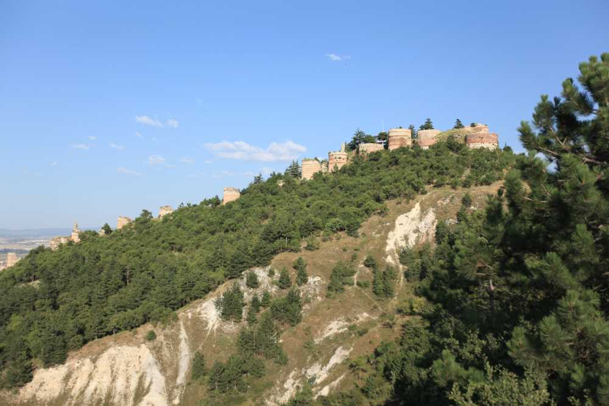
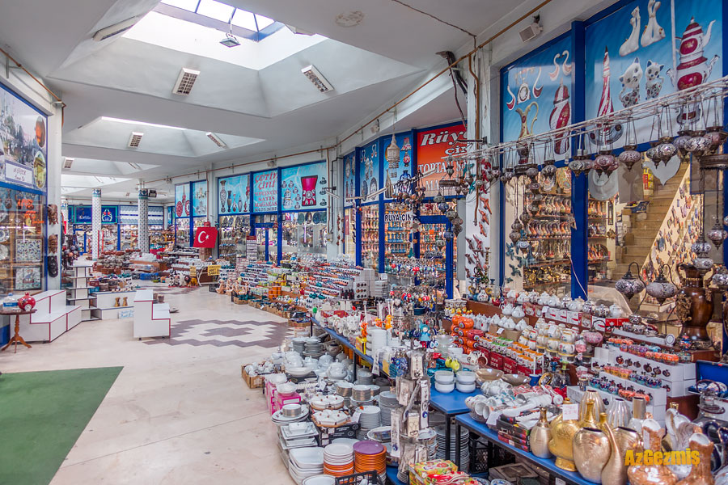

Kütahya
Kütahya, Türkiye Cumhuriyeti'nin Ege Bölgesi'nde yer alan bir ilidir.Kütahya ilinin nüfusu 576.688'dir. Bu nüfusun %78,3'ü şehirlerde yaşamaktadır. İlin yüz ölçümü 11.632 km2'dir. İlde km2'ye 50 kişi düşmektedir.2021 TÜİK verilerine göre 13 ilçe, 28 belediye, bu belediyelerde 222 mahalle, ayrıca 546 köy bulunmaktadır. Daha fazla bilgi için buraya tıklayınız.
Tipik bir Anadolu şehri Kütahya. Biraz Ege, biraz iç Anadolu az Doğu renkleriyle bir Anadolu sentezi. Sıcak mı sıcak, iyiniyetli insanı ile turiste her an yardıma hazır. Burada kendinizi rahat ve güvende hissedeceğiniz bir meltem gibi akıyor hayat, sakin ve usulca… İşte size Kütahya gezi rehberi…
Hisar Kalesi
Tarih boyunca birçok önemli medeniyete kucak açmış Kütahya’da geçmişin, bugünün ve geleceğin en heybetli şahidi Kütahya Kalesi…Halk arasında Hisar olarak bilinen Kütahya Kalesi M.S. 8. yüzyılda inşa edilmiş bir Bizans eseri.Tarihi kale, Bizans İmparatorluğunun ömrünü tamamlamasının ardından sırasıyla Selçuklu, Germiyanoğlu ve Osmanlı İmparatorluğu tarafından kullanılmış; yapılan ilave ve onarımlarla günümüze ulaşmış ve bugün o heybetli duruşuyla hala zamana meydan okumaktadır.
Aizanoi Antik Kenti
Aizanoi kenti, antik Frigya'ya bağlı olarak yaşayan Aizanitis’lerin ana yerleşim merkeziydi. Kentin yüksek platosu üzerinde bulunan Zeus Tapınağı'nın çevresinde yapılan kazılarda, MÖ 3 bin yıllarına ait yerleşim izlerinin ortaya çıktığı görülmüştür. Helenistik Dönem'de bu bölge değişimli olarak Bergama’ya ve Bithynia’ya bağlı iken MÖ 133’de Roma egemenliğine girmiştir. Roma imparatorluk döneminde tahıl ekimi, şarap ve yün üretimi sayesinde zenginleşmiş ve ünü bölge sınırlarını aşmış olan Aizanoi’de kesin kentleşme bulgularına ancak MÖ 1'nci yüzyıl sonlarına doğru rastlanmaktadır. Yine ilk sikkelerin bu dönemde basıldığı bilinmektedir. Aizanoi antik kenti en parlak dönemini MS 2 yüzyılda yaşamış, büyük imar faaliyetleri görmüş ve bu dönemde birçok yapı inşa edilmiştir. Erken Bizans Dönemi'nde piskoposluk merkezi iken, 7'nci yüzyıldan itibaren bu önemini yitirmiştir. Tapınak düzlüğü Orta Çağ'da bir hisara dönüştürülmüştür. Selçuklular Dönemi'nde Çavdar Tatarları tarafından üs olarak kullanılmasından dolayı buraya Çavdarhisar adı verilmiştir.
Ulu Cami
Bu Büyük Cami 45X25 metrekarelik bir alanı kaplamaktadır. Kuzeydoğu köşesinde bir minaresi olan caminin üç yönde kapısı vardır. Ana giriş kapısı karşısında sakahane bulunmaktadır. Cami içindeki büyük sütunlar Aızanoı Antik Kenti'nden getirilmiştir. İç kısmında küçük bir şadırvan vardır.Şadırvanın üstüne dört sütunlu müezzin mahfili yapılmıştır. Caminin ana mekânı, altı sütunun desteklediği yan yana iki kubbe ve yanlarda yarım kubbelerle örtülüdür. Caminin yarım kubbeyle örtülü, dışa çıkıntılı mihrabının sağındaki Kâbe tasvirli çini pano görülmeye değerdir.
Dumlupınar Şehitliği
Şehit Baba-Oğul Anıtı; 1912 yılında daha oğlu Mehmet 8 yaşında iken Balkan Savaşı’na katılmak için köyünden ayrılan, daha sonra sırasıyla Galiçya, Hicaz, Yemen, Kafkasya’da 11 yıl cepheden cepheye koşarak çarpışan, Çetmili Kara Ali Çavuş (Çetmi, Konya’nın Beyşehir ilçesine bağlı bir kasabadır. Günümüzde Akçabelen Mahallesi olarak geçer.) ve oğlu Onbaşı Mehmet’in muhteşem destanını sembolize eder. Çetmili Kara Ali Çavuş, Anadolu’da millî mücadele başlayınca, Doğu Cephesi'nden Kurtuluş Savaşı’na koşmuş, Başkomutan Meydan Muharebesi’nde 19 yaşındaki Alay Sancaktarı Mehmet Onbaşı ile karşılaşmıştır. Mehmet Onbaşı, onun 11 yıl önce bırakıp gittiği oğludur. Bu büyük asker, 31 Ağustos 1922 günü, 11 yıl sonra kavuşabildiği oğlunun kollarında şehit düşmüştür. Oğlu kahraman Onbaşı Mehmet de 9 Eylül 1922 günü İzmir’e giren birliğin başında şehit olmuştur. Anıt 30 Ağustos 1992’de ziyarete açılmıştır.Milisler Anıtı; millî mücadele döneminde şehit düşen sivil vatandaşlarımızı sembolize eden bir anıttır.Üç Komutan Anıtı; Millî mücadelemizin üç büyük komutanı olan Atatürk, İsmet Paşa ve Fevzi Çakmak anısına yapılmıştır.Mehmetçik Anıtı; Millî mücadele de süngüsünü takmış düşman üzerine saldırmaya hazır binlerce Mehmetçiğimizi sembolize eden bir anıttır.
Çiniciler Çarşısı
Kütahya'da ilk çini örnekleri 14. yüzyılın sonlarında görülmeye başlanırken çinide asıl ilerleme İznik'in çini sanatının zirvesinde olduğu 16. yüzyılın ikinci yarısından sonra başlar. Özellikle İstanbul'un çini ihtiyacını karşılamak için Kütahya'da çini atölyeleri kurulmuş, Osmanlı'nın gerileme dönemiyle beraber İznik'te çinicilik de aynı hızda gerilemeye başlamıştır. 18. yüzyılda çinicilik sanatının İznik'te tamamen kaybolmasıyla Kütahya bu alanda faaliyet gösteren tek yer olmuştur. Osmanlı'da çiniciliğin en güzel ve son örnekleri Hafız Mehmed Emin Efendi'nin elinden çıkmıştır.